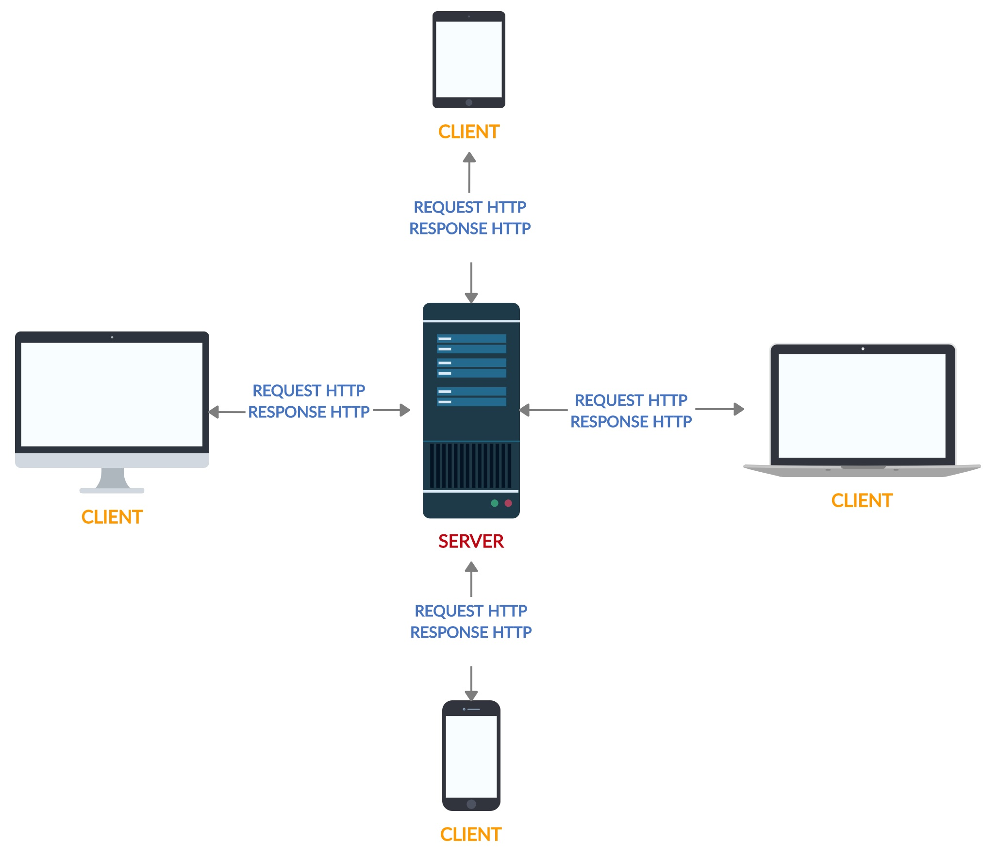

O funcionamento da WEB
HTTP é um protocolo que permite a obtenção de recursos, tais como documentos HTML. É a base de qualquer troca de dados na Web e um protocolo cliente-servidor, o que significa que as requisições são iniciadas pelo destinatário, geralmente um navegador da Web. Um documento completo é reconstruído a partir dos diferentes sub-documentos obtidos, como por exemplo texto, descrição do layout, imagens, vídeos, scripts e muito mais.
Clientes e servidores se comunicam trocando mensagens individuais (em oposição a um fluxo de dados). As mensagens enviadas pelo cliente, geralmente um navegador da Web, são chamadas de solicitações (requests), ou também requisições, e as mensagens enviadas pelo servidor como resposta são chamadas de respostas (responses).

Cliente
O user-agent é qualquer ferramenta que age em nome do usuário. Essa função é predominantemente realizada pelo navegador Web; algumas poucas exceções são programas usados por engenheiros e desenvolvedores Web para depurar as suas aplicações.
O navegador é sempre a entidade que inicia as requisições. Nunca é o servidor (embora alguns mecanismos tenham sido adicionados ao longo dos anos para simular mensagens iniciadas pelo servidor). Para mostrar uma página Web, o navegador envia uma requisição para buscar o documento HTML da página. Ele então realiza uma análise sintática desse arquivo, buscando requisições adicionais correspondentes a scripts de execução, informações de layout (CSS) para apresentação e subrecursos contidos na página (geralmente imagens e vídeos).
Depois o navegador interpreta esses recursos para mostrar ao usuário o documento completo, a página Web. Scripts executados pelo navegador podem buscar mais recursos em fases subsequentes e o navegador atualiza a página Web de acordo. Uma página Web é um documento de hipertexto. Isso significa que algumas partes do texto mostrado são links (vínculos com outras páginas ou recursos da Web), os quais podem ser ativados (normalmente pelo clique do mouse) para buscar uma nova página, permitindo ao usuário redirecionar seu agente-usuário e navegar pela internet. O navegador traduz esses endereços em requisições HTTP e depois interpreta as respostas HTTP para mostrar ao usuário uma resposta transparente.
Tecnologias: HTML, CSS e Javascript.
Servidor
Do outro lado do canal de comunicação está o servidor que serve o documento requisitado pelo usuário. Um servidor se apresenta virtualmente apenas como uma máquina: isto porque o servidor pode ser uma coleção de servidores dividindo a carga (através de uma técnica chamada balanceamento de carga) ou também como um programa complexo que acessa outros servidores (como um cache, um servidor de banco de dados, servidores de e-commerce, etc.), gerando todo ou parte do documento solicitado.
Um servidor não é necessáriamente apenas uma máquina, mas vários servidores podem estar hospedados na mesma máquina. Com o HTTP/1.1 e o cabeçalho Host, eles podem até compartilhar o mesmo endereço IP.
Tecnologias: Java, .NET, Javascript, Python, Ruby, PHP e etc...